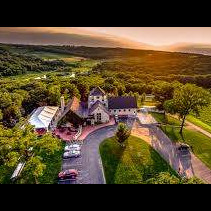
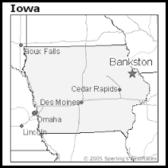

Bankston es una ciutat situada en el comtat de Dubuque, en l'estat de Iowa, Estats Units. Segons el cens de 2000 tenía una població de 27 habitants.
 | Pais | Estats Units |
| Estat | Iowa |
| Comtat | Dubuque |
| Alçada | 367m s.n.m. |
| Superficie | 751 096 km≤ |
| Població (2000) | 27 hab. |